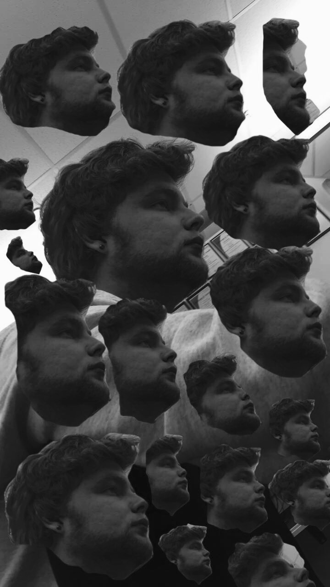
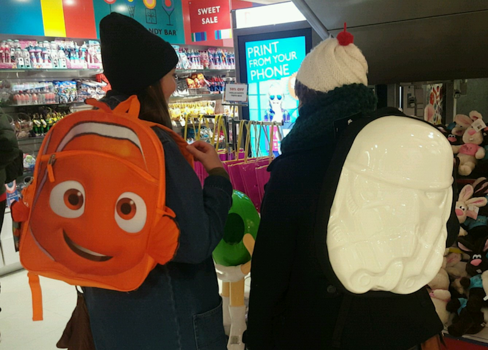

The Neck Beards are an upcoming local band. As of now they mostly only play covers of songs, but they are working on writing their own music. The Band has no particular genre, but likes to associate themselves with ska music. The Neck Beards like to experiment with unusual object as instruments.
 The Band consist of three memebers: Spike, Stretch, and Mustache Comb. Spike is a local art student that enjoys long walks on the beach and playing the ukulele. Stretch is a computer science major. Mustache Comb is a local blogger that enjoys searching for pumpkins. Each member brings a unique exprience to the band which you can hear throughout their music.